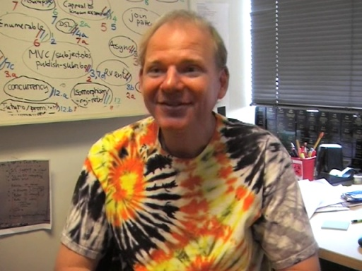
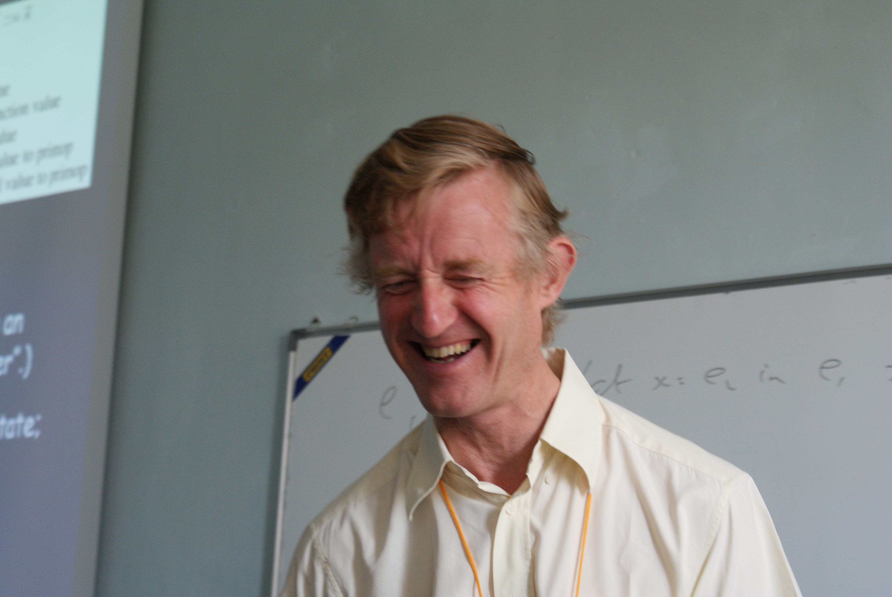
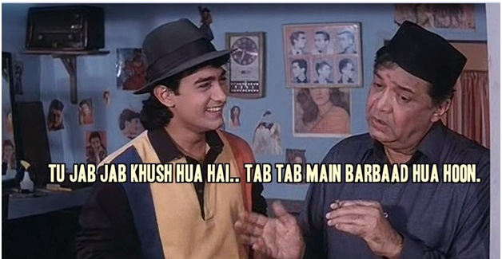
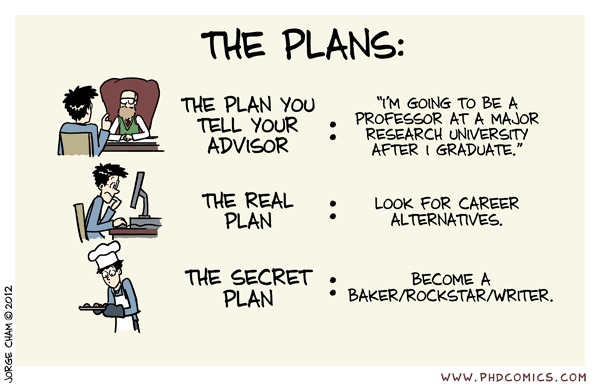
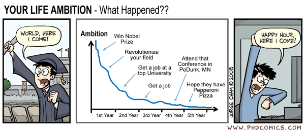
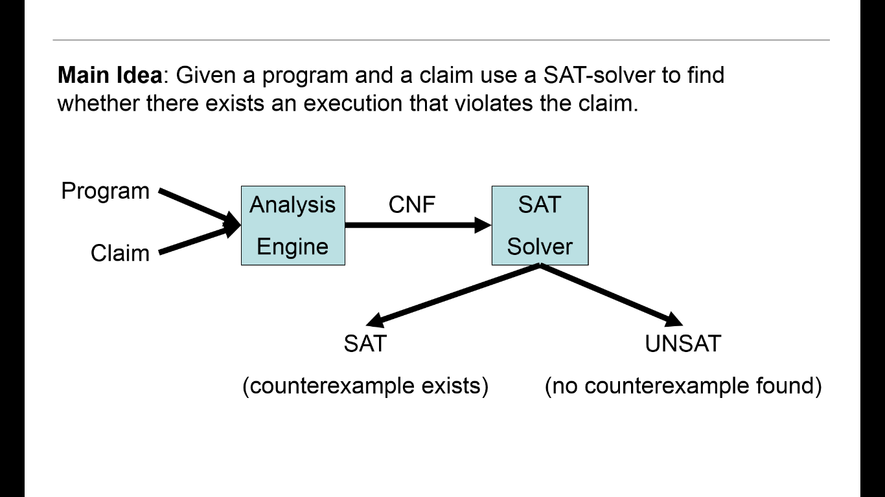
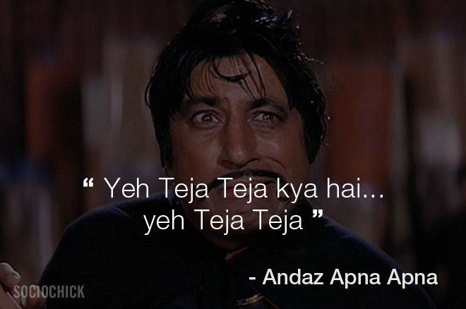

Stop Coding Pack your bags
and get ready for Research
1. The Story !
Erik Meijer & SPJ
 Tell dad tht you are into research
Curse Of Jobs :
Curse Of the Research !
2. Work & Problems
Formal Methods
▹ Definition :
"Formal methods are a particular kind of mathematically
based techniques for the specification, development and
Verification of software and hardware systems."
▹ Use :
To check whether a system behaves correctly with
respect to some Specification, of its desired behavior.
Spectrum
Powerful frameworks such as :
1. Hoare logic
2. Algebraic specification languages
3. Modal logics
4. Denotational semantics.
Lightweight formal methods :
1. Model checkers
2. Run-time monitoring
3. Type systems
Lightweight Methods
• Run Time Monitoring :
A collection of techniques that allow a system to detect
dynamically when one of its components is not behaving
according to specification.
• Type Systems :
A type system is a tractable syntactic method for
proving the absence of certain program behaviors
by classifying phrases according to the kinds
of values they compute.
Model Checking and Verification * The verification problem is:
Given program M and specification h determine
whether or not the behavior of M meets the
Specification h.
* Model Checking:
Model checking is a method for automatic (and algorithmic)
Verification of finite state systems.
Goal : Expand the scope of automated techniques
for program reasoning.
Bounded Model Checking with SAT
Given a Boolean formula (propositional logic formula),
Find a variable assignment such that the formula evaluates
to 1 or prove that no such assignment exists.
F = (a + b).(a’ + b’ + c)
For n variables, there are 2n possible truth assignments
to be checked.
First established NP-Complete problem. - S. A. Cook, Third Annual ACM Symp. on the Theory of Computing,1971, 151-158

Model checkers typically have three main components:
(1) A Specification language, based on propositional TL
(2) A way of encoding a state machine representing
The system to be verified, and
(3) A Verification procedure that uses an intelligent
Exhaustive search of the state space to determine
if the specification is true or not.
If the specification is not satisfied, then most model checkers will produce a counterexample execution trace that shows why the specification does not hold. The counterexamples are invaluable in debugging complex systems.
Bug Catching with SAT-SolversCBMC
CBMC is a Bounded Model Checker for C and C++ programs.
It allows verifying array bounds (buffer overflows),
pointer safety, exceptions & user-specified assertions.
The verification is performed by unwinding the loops
in the program and passing the resulting equation to
a decision procedure.
Algorithm DPLL
Input: A set of clauses Φ.
Output: A Truth Value.
function DPLL(Φ)
if Φ is a consistent set of literals
then return true;
if Φ contains an empty clause
then return false;
for every unit clause l in Φ
Φ ← unit-propagate(l, Φ);
for every literal l that occurs pure in Φ
Φ ← pure-literal-assign(l, Φ);
l ← choose-literal(Φ);
return DPLL(Φ ∧ l) or DPLL(Φ ∧ not(l));
History of the SAT Problem :
• Davis Putnam - Resolution based, 1960,
later Search based algorithm, 1962
• Proved NP Complete by Cook, 1971
• Stalmarcks algorithm - Patented, 1995
• Conflict driven Learning and Non chronological
backtracking in GRASP, 1996
• Local Search, 1997
• SATO - DPLL Based, 1997
• Chaff - DPLL Based, 2001
• BerkMin - DPLL Based, 2002
PROJECT WORK
Application of SAT for modeling and analyzing a
problem related to application in biology.
- M. Thattai, NCBS
Currently Studying the biological problems related
in this area and use Sat Solver via Model Checking
to found some efficient implementation that leads
to get desired query results or study behaviour
of such complex system.
NCBS
MODELLING CELL EVOLUTION :
Model cell evolution as a transition function
Update and delete table.
- Think Them as two dimensional table.
- Possibility at each place is 0/1
Constraints on them.
- Exactly one possibility for update table
- At least one possibility for delete table
- Allow only subsets to have 1's for delete table
POSE INTERESTING SAT QUERIES
"Is there an update'delete configuration and initial
state configuration which doesn't converge to a
equilibrium state before N iterations,for some N"
"What is the minimum number of steps required for
every possible update/delete table configuration
guaranteed to converge to an equilibrium state?"
Pointer Analysis :
For Each pointer (reference) in the program ,
what memory location(Object) does it points to.
"Statically determine the possibile run-time
values of a pointer."
TradeOff : Precision and Efficiency
Efficiency Of analysis and precision of Computed Solution
Paper '2001 :
Haven't we Solved The pointer Analysis Problem '01 ?
1. Flow Sensativity :
Use Control flow information.
2. Context Sensative :
Take account of calling context.
Phd's and Research education is about the :
"Thinking Scientifically"
" Writing precisely, formally"
"Classes dulls your mind but Vannila Jobs
Cause Multiple Orgon Failure "
Main Points :
1. Don't be afraid of failing !
2. Take Risks. Live Dangereously, at peaks.
3. Stop being Dumb! Have a sense of humour.
Questions ?
